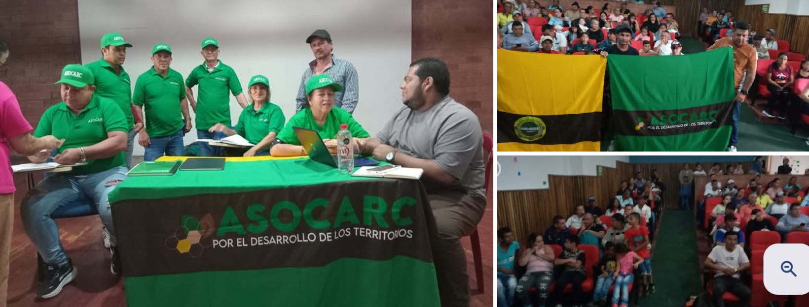

La Asociación ASOCARC es una organización social de carácter popular con vínculos en el trabajo rural y urbano, armonizando la relación campo-ciudad, al servicio de las comunidades campesinas del campo y periferias urbanas en el departamento de Caldas. Es una asociación sin ánimo de lucro, creada para el desarrollo social y del sector de la economía campesina, priorizando los cultivos limpios de agrotóxicos, sus encadenamientos, la comercialización solidaria, campesina, ambiental, agropecuaria y la transformación agroindustrial a pequeña escala, con el propósito de fortalecer la economía de las comunidades que representa y en permanente intercambio con los trabajadores afiliados. Busca construir y desarrollar propuestas de paz.
